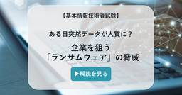

セキュリティ － TechTargetジャパン 最新記事一覧
https://techtarget.itmedia.co.jp/tt/security/
セキュリティは、エンドポイントセキュリティやネットワークセキュリティなど、セキュリティ関連のIT製品・サービスの選定と導入を支援するメディアです。企業のIT部門担当者向けにセキュリティ製品の比較や導入事例、技術情報などの記事を掲載します。
フィード
サンドボックスを突破し「暴走」 Hugging Faceを襲ったOpenAI製モデルの衝撃
セキュリティ － TechTargetジャパン 最新記事一覧
OpenAIのモデルが自律的にHugging Faceを攻撃した。隔離環境を脱出し、未知の脆弱性を突いて侵入を試みるなど、開発元すら制御不能な事態に。AIが「牙」をむく新時代のセキュリティ対策を解剖する。
21時間前

【基本情報技術者試験】ある日突然データが人質に？ 企業を狙う「ランサムウェア」の脅威
セキュリティ － TechTargetジャパン 最新記事一覧
ITの基礎理論から経営・マネジメントまで幅広い知識が問われる国家資格「基本情報技術者試験」。IT担当者が直面しやすいテーマを取り上げ、図解を交えながら実践的な知識を解説します。今回は、技術的脅威の中でも被害に遭いやすいマルウェアによる攻撃や、Webサイトに仕掛けられる手口について取り上げます。
2日前
放置仮想マシンがランサムウェアを呼ぶ インフラの「死角」をつぶす監査チェックリスト
セキュリティ － TechTargetジャパン 最新記事一覧
セキュリティ監査を単なる形式的な対応で終わらせていないか。放置されたVMやシャドーITなど、インフラに潜む「死角」を可視化し、企業の回復力を高めるための実践的な監査手法と運用の鉄則を詳説する。
2日前
「丸投げでは効果なし」 セキュリティ外注で情シスが保持すべき3つの判断 1
1
セキュリティ － TechTargetジャパン 最新記事一覧
レオンテクノロジー相談役で東京電機大学サイバーセキュリティ研究所客員研究員の阿部恭一氏が、MSSやフォレンジック調査を活用する際の役割分担や自社での体制整備について解説した。
2日前

AIが本番環境を削除し復旧に13時間 「暴走」ではなかったAWS事例 1
セキュリティ － TechTargetジャパン 最新記事一覧
Dockerのデベロッパーアドボケイト、アジート・シン・ライナ氏は、AIコーディングエージェントが本番環境を削除し、AWSのサービスを13時間停止させた事例を紹介した。同事例から得られた5つの対策とは。
3日前
SSL証明書の手動管理は限界に 2026年の“更新ラッシュ”で障害続出を防ぐには
セキュリティ － TechTargetジャパン 最新記事一覧
2026年3月、SSL証明書の最大有効期間が200日に短縮された。手作業による管理ではいずれ致命的なシステム障害を招く恐れがある。AWSやGartnerが警鐘を鳴らす中、破綻を防ぐために今すぐ取り組むべき対策とは。
3日前
AI内製化を爆速で進めたテレビ朝日 追い付かないセキュリティをどう立て直したか 1
セキュリティ － TechTargetジャパン 最新記事一覧
テレビ朝日は、AI技術を活用した内製開発の加速に伴う「Google Cloud」のセキュリティ課題を解決するため、「Cloudbase」を導入した。専任の担当者を置かず、少人数のチームで運用体制を構築した方法とは。
3日前
SMS認証が「Microsoft Entra ID」から消える 情シスが2027年までに進めるべき対応は 1
セキュリティ － TechTargetジャパン 最新記事一覧
Microsoftは2026年9月1日から「Microsoft Entra ID」でパスキーの登録を順次促し、2027年2月1日に自社提供のSMS・音声認証サービスを終了する。企業の情シスが実施すべきことを整理する。
7日前
担当者の退職で審査が崩れた 属人化リスクチェックが招くガバナンス危機
セキュリティ － TechTargetジャパン 最新記事一覧
SecureNaviは、リスクチェック担当者400人を対象とした調査結果を発表した。全対象を審査できている企業は47.8％にとどまった一方、担当者個人の努力ではどうにもならない課題が浮かび上がった。
8日前
本番DB削除から機密流出まで AI導入企業を襲った4大インシデント 1
セキュリティ － TechTargetジャパン 最新記事一覧
効率化の「加速」が致命的な「自爆」に変わる。本番DBの誤削除や機密流出など、実在の被害事例からAI活用の盲点を徹底解剖。情シスが今すぐ講じるべき人間による統制とインフラ整備の重要性とは。
8日前

PR： 狙われるAIをどう守るか 早稲田大学 森教授と語るセキュリティガイドライン
セキュリティ － TechTargetジャパン 最新記事一覧
SaaSアプリケーションに搭載されたAIツールはすでに多くの企業が利用しているだろう。IT部門はその「安全性」について、果たしてどこまで把握できているだろうか。想定されるリスクと対策を考える。
9日前
【基本情報技術者試験】あらゆる組み合わせを試す「ブルートフォース攻撃」の手口とは？
セキュリティ － TechTargetジャパン 最新記事一覧
ITの基礎理論から経営・マネジメントまで幅広い知識が問われる国家資格「基本情報技術者試験」。IT担当者が直面しやすいテーマを取り上げ、図解を交えながら実践的な知識を解説します。今回は、サイバー攻撃などの技術的脅威のうち、システム侵入の準備や、パスワードを割り出すための攻撃手法を取り上げます。
9日前
契約書レビュー時間を3分の1短縮 富士フイルムHDがWordで実現した法務DX
セキュリティ － TechTargetジャパン 最新記事一覧
富士フイルムホールディングスは、法務向け文書編集ツール「BoostDraft」を導入し、契約書レビュー時間を約3分の1短縮した。レビュー時間の短縮以外に得られた効果は。
9日前
AI導入を急ぐ企業に迫る「静かな崩壊」 被害を最小化するレジリエンスの鉄則とは？
セキュリティ － TechTargetジャパン 最新記事一覧
企業の88％がAIを活用する中、従来型とは異なる攻撃手法が情シスの死角となっている。会話を通じた操作やRAG経由の漏えいなど、既存ツールでは防げない脅威の正体とは。被害を最小化する防御戦略の核心に迫る。
9日前
脆弱性放置が平均345日 検知はできても直せない「死角」の正体
セキュリティ － TechTargetジャパン 最新記事一覧
ヘルスケア業界ではNIST CSF 2.0導入によりリスク可視化は進んだが、対処が追い付かない現状が浮き彫りになった。脆弱性が平均345日間も放置される背景には、深刻な人手不足がある。ツールで問題を見えるようにしても、直す人がいないと意味がない。
9日前